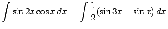

Inhalt Index DeskTop Bronstein
Integralrechnung Unbestimmtes Integral Integrationsregeln
Die Integration eines komplizierten Integranden läßt sich durch algebraische oder trigonometrische Umformung auf einfachere Integrale zurückführen.
.